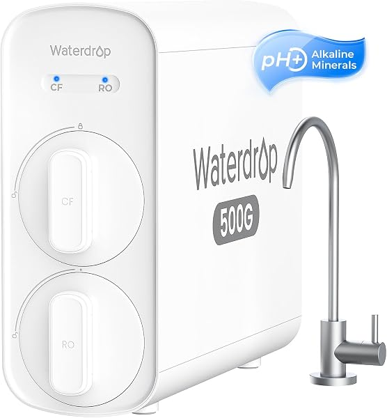

Waterdrop Reverse Osmosis Review 2026: G3P600, G3P800, G5P500A, X16, M6H Compared
PureFlow Lab is reader-supported. We may earn a commission when you buy through links in this guide — at no extra cost to you. As an Amazon Associate, we earn from qualifying purchases. See our Disclosure for details.
Top Picks (At a Glance)
The Waterdrop models covered in this overview, organized by use case. PureFlow Lab does not test products; specs and certifications below come from each product’s Amazon listing.

Waterdrop G3P600 — 600 GPD, 8-Stage
Tankless, 600 GPD, 8 stages, 2:1 pure-to-drain. Certified to NSF/ANSI 58 (TDS) and 372 (lead-free), and “tested and certified against NSF 42,” per the listing. Smart faucet shows TDS and filter life. Needs an outlet under the sink.
Check Price on Amazon →
Waterdrop G3P800 — 800 GPD, 10-Stage
Tankless, 800 GPD, 10 stages, 3:1 pure-to-drain. Certified by IAPMO R&T to NSF/ANSI 58, 42, 53 and 372, per the listing. Smart faucet shows TDS. Installation needs two holes drilled (faucet and drain).
Check Price on Amazon →
Waterdrop G5P500A — 500 GPD, Alkaline, 8-Stage
Tankless, 500 GPD, 8 stages with alkaline remineralization, 2:1 pure-to-drain, per the listing. The faucet install needs drilling. The listing makes no certification claim.
Check Price on Amazon →
Waterdrop X16 — 1,600 GPD, Alkaline, 11-Stage
1,600 GPD peak, 11 stages with alkaline remineralization, 3:1 pure-to-drain. Certified by IAPMO R&T to NSF/ANSI 42, 58 and 372, per the listing. Digital faucet with volume control, TDS and filter-life display.
Check Price on Amazon →
Waterdrop M6H Instant Hot — Countertop RO with Hot Water
Countertop RO with instant hot water from room temperature up to 203°F (5 presets), 7 stages, 3:1 pure-to-drain, and a 40 oz glass pitcher, per the listing. No plumbing. The listing makes no certification claim (it says “tested by a third-party laboratory”).
Check Price on Amazon →TL;DR: Waterdrop is a tankless-first reverse osmosis brand: most of its under-sink systems have no storage tank and use a smart faucet. For most homes, the G3P600 is the pick: 600 GPD tankless, 2:1 pure-to-drain, NSF/ANSI 58 and 372 per the listing, with a faucet that shows TDS and filter life. Step up to the G3P800 for 800 GPD, a 3:1 ratio and a broader certification list (NSF/ANSI 58, 42, 53 and 372 by IAPMO R&T). If you want alkaline remineralization, the X16 (1,600 GPD peak, NSF/ANSI 42, 58 and 372) is the flagship, and the G5P500A is a 500 GPD alkaline option whose listing makes no certification claim. Renters should look at the M6H Instant Hot countertop for no-plumbing RO water plus hot water.
This page is a research-based overview of Waterdrop’s RO lineup, built from the product listings: what each model is documented to do, where the trade-offs are, and which model fits which situation.
About Waterdrop
Waterdrop sells water filtration systems, with a residential RO lineup built mostly around tankless under-sink designs plus countertop units. Its systems are widely sold on Amazon.
What the listings document across the lineup:
- Tankless-first. The under-sink models here are all tankless: no storage tank under the sink, and water is filtered on demand. Tankless systems need an electrical outlet under the sink.
- Named certifications on most models. The G3P800 is certified by IAPMO R&T to NSF/ANSI 58, 42, 53 and 372; the X16 to NSF/ANSI 42, 58 and 372; the G3P600 to NSF/ANSI 58 and 372 and “tested and certified against NSF 42.” The G5P500A and M6H listings make no certification claim, so check before assuming.
- Efficient drain ratios. The listings give 2:1 (G3P600, G5P500A) or 3:1 (G3P800, X16, M6H) pure-to-drain ratios. Conventional tank systems usually send more water to the drain than they produce.
- Smart faucets. The G3P600, G3P800 and X16 faucets display TDS, and the G3P600 and X16 also show filter life, per their listings.
What Waterdrop doesn’t offer here: tank-based systems for buyers who want them, systems that run without electricity, or any whole-house RO product. For those, look at iSpring, APEC, or Express Water.
The Waterdrop Lineup Explained (Decoding the Names)
Waterdrop’s names don’t follow one consistent pattern, but the number in most names is the GPD rating:
- G-series (G2, G3P600, G3P800, G5P500A): tankless under-sink systems. The G2 is a 400 GPD, 7-stage model; the G3P600 and G3P800 are 600 and 800 GPD; the G5P500A is a 500 GPD alkaline model.
- X-series (X8-WAN, X16): higher-end tankless systems with alkaline remineralization. The X8-WAN is 800 GPD with NSF/ANSI 42, 58 and 372 per its listing; the X16 is 1,600 GPD peak.
- M-series (M6H): countertop systems. The M6H adds an instant hot water dispenser.
Most buyers will choose among the G3P600, G3P800, G5P500A, X16, or M6H depending on budget, whether they want alkaline, and whether they can install under the sink. The Waterdrop D6, which this page used to cover, is no longer available on Amazon.
Top Picks Detailed
Best Overall: Waterdrop G3P600 (600 GPD, 8-Stage)
The Waterdrop G3P600 is the right Waterdrop pick for most homes. Per the listing, it is a tankless, 8-stage system rated at 600 GPD with a 2:1 pure-to-drain ratio. It is certified to NSF/ANSI 58 (TDS reduction) and 372 (lead-free materials), and “tested and certified against NSF 42” for chlorine, taste and odor. The smart faucet shows TDS and filter life.
A 600 GPD rating is more than a typical household uses, and tankless design means no storage tank taking up cabinet space. The unit itself measures 18.12" L x 5.67" W x 17.72" H per the listing, so measure your cabinet. It needs an electrical outlet under the sink.
Note what the listing does not claim: NSF/ANSI 53 certification or leak detection. If NSF/ANSI 53 matters to you, the G3P800 lists it. For leak protection on any system, add a separate leak-stop valve.
Pros: NSF/ANSI 58 and 372 per the listing, tankless, 600 GPD, 2:1 pure-to-drain, faucet shows TDS and filter life. Cons: Needs an under-sink outlet, no NSF/ANSI 53 claim, no leak detection mentioned, no alkaline stage.
Best Premium Mainstream: Waterdrop G3P800
The Waterdrop G3P800 steps up from the G3P600 in three documented ways: 800 GPD instead of 600, 10 stages instead of 8, and a 3:1 pure-to-drain ratio instead of 2:1. It also has the broadest certification list in the lineup: certified by IAPMO R&T to NSF/ANSI 58 (TDS), 42 and 53, and 372, per the listing. The smart faucet shows TDS.
The trade-off is installation: per the listing it needs two holes drilled, one for the faucet and one for the drain. The listing doesn’t mention leak detection. Whether the step up is worth it comes down to whether you value the NSF/ANSI 53 certification and the better drain ratio; the capacity difference is unlikely to matter for most households.
Pros: NSF/ANSI 58, 42, 53 and 372 by IAPMO R&T per the listing, 3:1 pure-to-drain, 800 GPD, 10 stages, faucet shows TDS. Cons: Two holes to drill, needs an under-sink outlet, more capacity than most homes need, no leak detection mentioned.
Alkaline Tankless Option: Waterdrop G5P500A
The Waterdrop G5P500A is a tankless system with alkaline remineralization built in: 500 GPD, 8 stages, 2:1 pure-to-drain, per the listing. Remineralization adds some minerals back after the RO membrane, for people who find plain RO water flat. The faucet install needs drilling.
The key caveat: the listing makes no certification claim. If you want alkaline tankless with named certifications, the Waterdrop X8-WAN (800 GPD, NSF/ANSI 42, 58 and 372, 24-month RO filter life, per its listing) or the X16 below are the options that document them.
Pros: Alkaline remineralization built in, tankless, 500 GPD, 2:1 pure-to-drain. Cons: No certification claim on the listing, needs drilling and an outlet.
Best Flagship: Waterdrop X16 (1,600 GPD, Alkaline)
The Waterdrop X16 is Waterdrop’s flagship under-sink system. Per the listing: 1,600 GPD peak, 11 stages including alkaline remineralization, a 3:1 pure-to-drain ratio, and certification by IAPMO R&T to NSF/ANSI 42, 58 and 372. Its digital faucet has volume control and shows TDS and filter life.
It targets buyers who want alkaline water, high flow and a named certification list in one unit. For most households, 1,600 GPD is far more capacity than needed; if alkaline is the main draw, compare the X8-WAN, or add an inline remineralization filter to another system.
Pros: 1,600 GPD peak, alkaline built in, 11 stages, NSF/ANSI 42, 58 and 372 by IAPMO R&T, faucet with volume control, TDS and filter-life display. Cons: More capacity than most homes need, needs an under-sink outlet, listing doesn’t claim NSF/ANSI 53 (the G3P800 does).
Best Countertop: Waterdrop M6H Instant Hot
The Waterdrop M6H Instant Hot is the pick for renters or anyone who can’t install an under-sink system. It sits on the counter and you fill it from the tap. Per the listing it has 7 stages, a 3:1 pure-to-drain ratio, instant hot water from room temperature up to 203°F with 5 presets, a 185 oz tank (135 oz for tap water, 50 oz for waste), and a 40 oz glass pitcher.
The instant hot water is the standout: most countertop RO units dispense only room-temperature water. The trade-offs: the listing makes no certification claim (it says “tested by a third-party laboratory”), you refill the tank by hand and empty the waste side, and it takes counter space. If named certifications matter, compare the AquaTru Classic.
Pros: No plumbing, instant hot water with 5 presets, 3:1 pure-to-drain, glass pitcher included. Cons: No certification claim on the listing, manual refilling, counter space, lower output than under-sink systems.
What Sets Waterdrop Apart
Three things distinguish Waterdrop on paper:
1. Tankless-first lineup. While iSpring, APEC and Express Water mainly sell tank-based systems, Waterdrop’s under-sink lineup here is all tankless: no storage tank, water on demand, and 2:1 or 3:1 drain ratios per the listings.
2. Certification breadth on key models. The G3P800 lists NSF/ANSI 58, 42, 53 and 372, certified by IAPMO R&T. Many RO systems list only NSF/ANSI 58, or none. Note that it varies by model: the G3P600 doesn’t claim 53, and the G5P500A and M6H claim none.
3. Smart faucets. The G3P600, G3P800 and X16 faucets show TDS, so you can see whether the membrane is still performing; the G3P600 and X16 also show filter life.
What Waterdrop Could Do Better
Three weaknesses to weigh:
1. The naming is confusing. G2, G3P600, G3P800, G5P500A, X8-WAN, X16, M6H — the letters don’t follow one pattern, and models get replaced (the D6 is no longer available on Amazon). Check the exact listing before buying.
2. Everything needs electricity, and certification varies. Tankless systems need an outlet under the sink. And certifications differ by model; don’t assume the whole lineup carries the G3P800’s list.
3. No whole-house RO product. Waterdrop’s lineup is point-of-use (under-sink or countertop). For whole-house or high-capacity applications, look at iSpring’s commercial systems (RCB3P, RCS5T, CRO1000) or a whole-house RO specialist. See our best whole house RO systems guide.
Waterdrop vs Competitors
vs APEC ROES-50: The APEC ROES-50 is a 5-stage, 50 GPD tank-based system that needs no electricity; its listing makes no NSF claim. Waterdrop is the choice if you want tankless, a smart faucet and named certifications; APEC if you want a simple system with no outlet needed. Compare current prices.
vs iSpring RCC7AK: The iSpring RCC7AK is a 6-stage, 75 GPD tank system with an alkaline stage and whole-system NSF/ANSI 58 certification per its listing. Among Waterdrop models, alkaline comes on the G5P500A, X8-WAN and X16. iSpring for a tank system with alkaline and no electricity; Waterdrop for tankless and capacity.
vs Express Water 5-stage: The Express Water 5-stage is a 50 GPD tank system with an extra filter set and a leak detector included per its listing; its title says “NSF Certified” without naming a standard. Express Water for a basic tank system; Waterdrop for tankless and named certifications.
vs AquaTru: AquaTru is the closest countertop competitor to the M6H. The AquaTru Classic is tested and certified by IAPMO to NSF/ANSI 42, 53, 58, 401 and P473 per its listing, but has no hot water; the M6H adds instant hot water but makes no certification claim.
For a deeper comparison, see our best reverse osmosis systems guide.
Comparison Table
| Model | Type | GPD | Stages | Pure-to-drain | NSF/ANSI (per listing) | Smart Features |
|---|---|---|---|---|---|---|
| G3P600 | Tankless | 600 | 8 | 2:1 | 58, 372; tested and certified against 42 | Faucet: TDS, filter life |
| G3P800 | Tankless | 800 | 10 | 3:1 | 58, 42, 53, 372 (IAPMO R&T) | Faucet: TDS |
| G5P500A | Tankless, alkaline | 500 | 8 | 2:1 | None stated | — |
| X16 | Tankless, alkaline | 1,600 (peak) | 11 | 3:1 | 42, 58, 372 (IAPMO R&T) | Faucet: volume control, TDS, filter life |
| M6H | Countertop | n/a | 7 | 3:1 | None stated | Instant hot, 5 presets |
Buyer Scenario Decision Matrix
Match your situation:
| Your Situation | Right Waterdrop Pick | Why |
|---|---|---|
| First Waterdrop, want a balanced pick | G3P600 | 600 GPD tankless, NSF/ANSI 58 and 372, TDS faucet |
| Want the broadest certification list | G3P800 | NSF/ANSI 58, 42, 53, 372 and a 3:1 drain ratio |
| Want alkaline tankless | G5P500A or X8-WAN | G5P500A: no cert claim; X8-WAN: NSF/ANSI 42, 58, 372 |
| Want maximum capacity with alkaline | X16 | 1,600 GPD peak, alkaline, NSF/ANSI 42, 58, 372 |
| Rent, apartment, or want countertop with hot water | M6H Instant Hot | No plumbing, hot water up to 203°F |
| Want alkaline on a G3P600 | G3P600 + an inline remineralization filter such as the Waterdrop MNR35 | MNR35 has 1/4" and 3/8" quick-connects per its listing; confirm fit before buying |
| You want RO at every tap in the house | Look elsewhere — Waterdrop doesn’t make whole-house RO | See our best whole house RO guide |
| Want a tank system with no electricity | Look at the iSpring RCC7AK or Express Water 5-stage | Tank-based systems don’t need an outlet |
FAQ
Are Waterdrop RO systems any good?
Waterdrop’s under-sink lineup is tankless, with efficient 2:1 or 3:1 drain ratios and smart faucets, and several models list named certifications (the G3P800: NSF/ANSI 58, 42, 53 and 372 by IAPMO R&T). The trade-offs: all of them need electricity, the naming is confusing, and certification varies by model (the G5P500A and M6H listings claim none). PureFlow Lab does not test products; check the listing for the exact model.
What’s the difference between the Waterdrop G3P600 and G3P800?
Per the listings: the G3P600 is 600 GPD, 8 stages, 2:1, NSF/ANSI 58 and 372 (plus tested and certified against NSF 42), with a faucet showing TDS and filter life. The G3P800 is 800 GPD, 10 stages, 3:1, certified by IAPMO R&T to NSF/ANSI 58, 42, 53 and 372, with a TDS faucet, and it needs two holes drilled (faucet and drain).
Is the Waterdrop X16 worth the price?
For most households, 1,600 GPD is far more capacity than needed. It makes sense if you want alkaline remineralization, high flow, and a named certification list (NSF/ANSI 42, 58 and 372) in one unit. If alkaline is the main draw, compare the X8-WAN (800 GPD, same three standards per its listing) or add an inline remineralization filter to another system. Check current prices.
Does the Waterdrop G3P800 have leak detection?
The G3P800 listing doesn’t mention leak detection, and neither does the G3P600’s. If you want leak protection, add a separate leak-stop valve under the sink; mechanical versions shut off the supply when their sensor pads get wet.
How easy is Waterdrop installation?
Under-sink tankless RO is a common DIY project, but you’ll need an electrical outlet under the sink, a cold-water connection, a drain connection, and a faucet hole. The G3P800 listing says two holes are needed (faucet and drain). Stainless sinks can be drilled with the right bit; granite or quartz needs a diamond hole saw used wet at low speed, or a plumber for that step. Measure your cabinet too (the G3P600 is 18.12" x 5.67" x 17.72" per its listing).
How long do Waterdrop filters last?
It varies by model and water quality. The G3P600 and X16 faucets display filter life, and the X8-WAN listing gives a 24-month RO filter life. Follow Waterdrop’s schedule for your model and check the current price of replacement filters before you buy the system.
Does Waterdrop make a whole house RO system?
No. Waterdrop’s lineup is point-of-use (under-sink or countertop). For high-capacity RO, the iSpring CRO1000 is a 1,000 GPD commercial tankless system per its listing (it needs 80–130 psi, with an optional booster pump below 80 psi). For pre-engineered whole-house RO packages from water-treatment specialists, see the US Water Systems Defender or Crystal Quest whole-house RO systems. See our best whole house RO guide for the full alternatives.
Where are Waterdrop systems made?
The listings covered here don’t state where the systems are made. If country of origin matters to you, check the listing’s product details or ask Waterdrop before buying.
Bottom Line: Which Waterdrop Should You Buy?
For most homeowners: the Waterdrop G3P600. 600 GPD tankless, 2:1, NSF/ANSI 58 and 372 per the listing, with a faucet that shows TDS and filter life.
If you want the broadest certification list and a better drain ratio: step up to the G3P800 (NSF/ANSI 58, 42, 53 and 372 by IAPMO R&T; 3:1).
If you want alkaline tankless: the G5P500A (500 GPD, no certification claim) or, for named certifications, the X8-WAN.
For maximum capacity with alkaline: the flagship Waterdrop X16 (1,600 GPD peak, 11 stages, NSF/ANSI 42, 58 and 372). More than most homes need.
For renters or anyone wanting countertop: the Waterdrop M6H Instant Hot — no plumbing, RO water plus instant hot water, but no certification claim on the listing.
If you want RO water at every tap in the house: Waterdrop doesn’t make a whole-house RO product. See our best whole house RO systems guide for the alternatives.
Ready to buy?
Check current pricing on whichever Waterdrop fits your situation. Your clicks keep these guides free.
Shop All Waterdrop RO Systems on Amazon →
Found this useful? Share it with someone shopping the Waterdrop lineup.
Keep Reading
- Best Reverse Osmosis Systems for Home — Waterdrop compared against the main competitors
- Best Whole House Reverse Osmosis Systems — for whole-house RO (Waterdrop doesn’t make these)
- Whole House RO vs Under-Sink RO — decision framework
- Whole House RO Cost Guide — what drives the cost
- Express Water Reverse Osmosis Review — the budget tank-based alternative
- AquaTru Reverse Osmosis Review — the countertop alternative
- Best Countertop Reverse Osmosis Systems — where the M6H fits in the countertop field
- Best Tankless Reverse Osmosis Systems — Waterdrop’s tankless models vs the field
- APEC vs iSpring vs Waterdrop — the G3P600 compared head-to-head with tank-based rivals